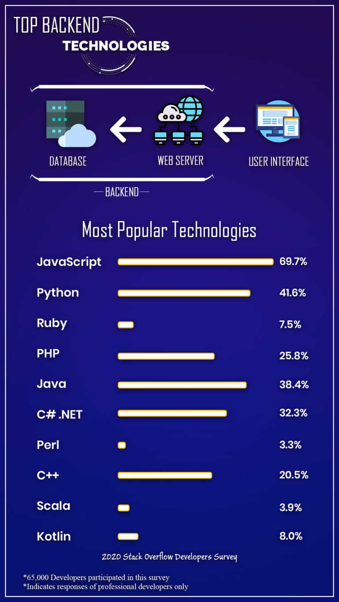
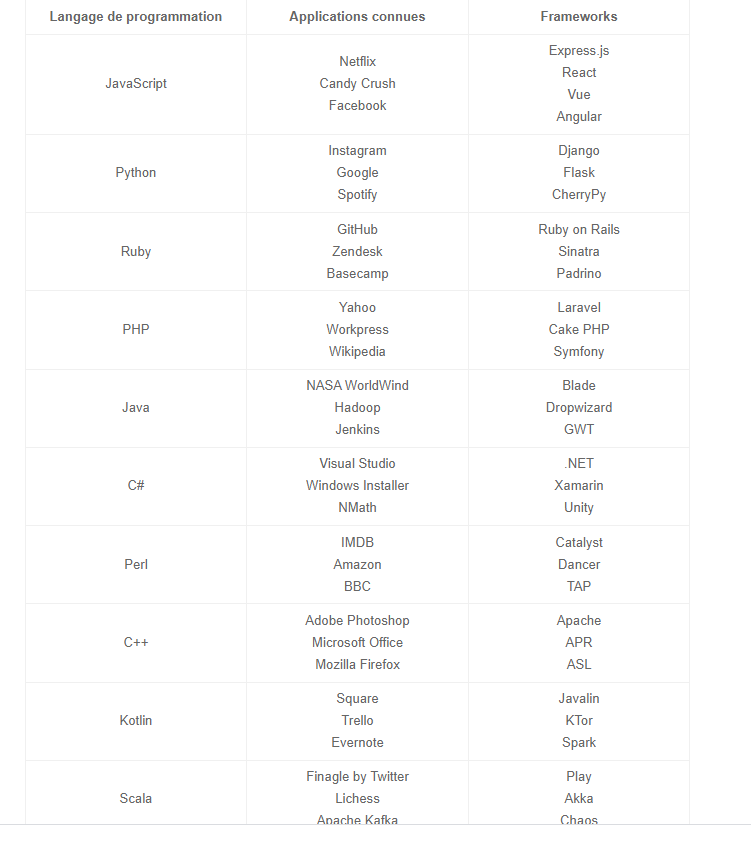

Les technologies Backend sont primordiales dans le développement des projets logiciels quotidiens. Que vous
soyez
fondateur d’une startup, responsable informatique ou décideur d’entreprise, le choix de la bonne technologie
backend
est
crucial pour déterminer le succès de votre projet.
En effet, des technologies backend bien choisies peuvent garantir l’évolutivité, la vitesse de
fonctionnement et
répondre instantanément aux demandes et aux besoins des clients. Il est difficile de choisir l’option
appropriée,
surtout si vous êtes un non-programmeur.
Ce guide présente de manière exhaustive les dix principales technologies backend, leurs caractéristiques,
leurs
limites
et d’autres détails. Nous espérons qu’il vous aidera à prendre la bonne décision.

BACKEND est un terme technique qui est utilisé par les professionnels de l’informatique et les codeurs. Fondamentalement, le backend est le code du programmeur qui s’occupe des opérations côté serveur, y compris les fonctions CRUD avec la base de données et toute la logique du serveur. La majorité des syntaxes d’exploitation et des données sont en attente et obtenues dans le backend de toute application. Les utilisateurs ne peuvent pas accéder au backend d’une application informatique.

Nous allons ici discuter de l’une des meilleures technologies de pointe. Chaque technologie côté serveur a ses
caractéristiques principales et ses limites. Il est crucial de décider lequel est approprié en fonction des
exigences de
votre projet. En voici un aperçu :
Au cours des huit dernières années, JavaScript a remporté la première place en tant que technologie de programmation la
plus couramment utilisée dans les enquêtes annuelles Stack Overflow. L’enquête de 2020 auprès des développeurs sur Stack
Overflow présente également que 69,7 % des développeurs professionnels (47 184 répondants ont participé) ont voté en
faveur de JavaScript comme étant la technologie la plus populaire.
Avec l’aide de Node.js, vous pouvez exécuter des opérations côté serveur sous la technologie de programmation
JavaScript. Mais il est également essentiel de comprendre que Node.js fonctionne comme une plate-forme et utilise
principalement Express.js comme son framework côté serveur. En d’autres termes, Express.js est un cadre backend
open-source pour Node.js.
Express.js, en conjonction avec Node.js, utilise JavaScript comme langage frontend et backend. Elle développe également
des interfaces de programmation d’applications (API) pour des applications web, mobiles, hybrides, mono et multi-pages.
Caractéristiques de JavaScript
Développement rapide : JavaScript permet aux développeurs de l’utiliser comme technologie frontend et backend. C’est
pourquoi il est rapide et facile de produire des applications mobiles et web avec ce langage de script.
Moins de frais généraux : Cette technologie de base est utile grâce à ses fonctions intégrées pour l’accès aux DOM et
aux boucles, etc. Cela permet de réduire le nombre de scripts et d’améliorer les performances.
Technologie Backend minimaliste : La plate-forme JavaScript comme Express.js offre des modules middleware Express pour
relever différents défis de développement. Ces intergiciels se composent d’un enregistreur de requêtes HTTP, d’un
système de traitement des erreurs, d’en-têtes de sécurité et de fonctions de données POST. De plus, JavaScript est
également un framework non doctrinaire qui fonctionne sans réglementation stricte. Les développeurs peuvent utiliser
l’intergiciel de leur choix sans aucune restriction.
Réduire les dépenses : Le backend JavaScript fonctionne de manière très efficace. Le même langage est utilisé pour
produire le codage frontend et le codage côté serveur des logiciels. C’est pourquoi il devient facile à gérer en termes
d’effort et de budget.
Communauté Open-Source : La portée de l’amélioration devient moindre sans la contribution et le retour d’information de
la communauté. Heureusement, JavaScript est une communauté open-source et les ingénieurs backend ont toujours la chance
d’être évalués. De tels examens conduisent également à une amélioration de votre codage backend.
Traitement des demandes d’E/S : Express.js, en conjonction avec Node.js, a suffisamment de puissance pour traiter des
milliers de notifications et de demandes d’E/S des utilisateurs de l’application.
Limitations de JavaScript
Il n’est pas facile de comprendre la nature événementielle des backends JavaScript. Les développeurs qui travaillent
avec d’autres langages de codage, en particulier, interprètent mal les rappels et rédigent tout le code dans les
rappels. Cependant, ce problème est rare dans les dernières versions.
Les programmeurs interprètent généralement mal le concept d’intergiciel lorsqu’ils utilisent la programmation JavaScript
côté serveur.
Il est également difficile d’héberger des frameworks backend de JavaScript avec des bases de données MySQL.
Peu d’ingénieurs se plaignent également de la nature inopinée des technologies backend JavaScript. Selon eux, la
conception standard est bien meilleure que cette liberté.
Python est un langage de programmation polyvalent de premier plan créé par un programmeur néerlandais, Guido van Rossum,
en 1991. Grâce à ses compétences de base en matière de codes concis et lisibles, Python aide les programmeurs en backend
à écrire des scripts rationnels et explicites.
Facile à comprendre et à coder : La compétence principale de Python est sa fonction de lisibilité. En fait, la précision
du script Python le rend facile à comprendre et à coder, tant pour les débutants que pour les programmeurs. Parfois, on
dirait aussi des phrases en Anglais.
Vastes bibliothèques : La technologie de programmation backend permet de télécharger de vastes bibliothèques. Ces
bibliothèques comprennent des codes pour les tests unitaires, les bases de données, les expressions régulières, la
navigation, le courrier électronique, etc. En bref, grâce à l’appui de vastes bibliothèques, les ingénieurs backend
n’ont pas à écrire chaque code manuellement.
Abordable : Python est open-source et gratuit. C’est pourquoi les développeurs et les entreprises ont la possibilité
d’utiliser gratuitement de vastes bibliothèques et d’autres sources pour leurs projets.
Opportunités de l’IdO : Avec l’aide des fonctionnalités de programmation modernes de Python, vous pouvez construire des
projets physiques sur Raspberry Pi.
Intégrable : Il est facile d’insérer votre code Python dans le code source de langages comme le C++. Cependant, le
codeur ne doit pas oublier la règle WORA (Write Once Run Anywhere).
Toute interruption du codage Python peut entraîner un ralentissement de l’exécution. Cela peut également affecter la
rapidité du projet.
Par rapport à d’autres technologies de base, les couches d’accès aux bases de données de Python ne sont pas entièrement
développées.
Python a également besoin de tests supplémentaires pour détecter les bugs et autres erreurs.
Il dépend de bibliothèques et de frameworks tiers.
PHP est une technologie de pointe de script côté serveur qui a été introduite par Rasmus Lerdorf en 1994. Cette
technologie backend open-source est couramment utilisée pour les sites web. Environ 79,1 % des sites web sur l’internet
utilisent PHP comme technologie côté serveur, selon une récente enquête du W3Techs.
Ce langage de script polyvalent est facile à utiliser et permet d’ajouter des informations dans les bases de données. La
disponibilité de plusieurs frameworks modernes, une communauté massive, une base de code robuste et un déploiement
facile ajoutent également une valeur considérable à cette technologie. Il est préférable d’utiliser PHP avec MySQL et
Linux Apache.
Open Source et indépendant de la plateforme : Diverses bibliothèques PHP gratuites sont disponibles sur le web. Les codeurs peuvent les utiliser pour un développement rapide du backend. Bien que les systèmes d’exploitation comme Windows, Linux, etc., supportent principalement PHP, mais vous pouvez également exécuter des applications web PHP sur n’importe quelle plate-forme. Rentable : Avec la présence de communautés libres et open-source, il est assez pratique de coder avec PHP. C’est pourquoi il est peu coûteux d’engager un développeur PHP. Il occupe également l’avant-dernière place parmi les technologies les plus payantes aux États-Unis, selon l’enquête 2020 Stack Overflow Developer Survey. Simplifie la programmation : Au lieu d’utiliser un long code SQL, les cadres PHP permettent aux développeurs de tirer profit de la fourniture de systèmes de cartographie objet-relationnelle (ORM). De même, l’utilisation de l’architecture MVC (Model-View-Controller) permet aux développeurs de coder facilement des fonctions côté serveur. Le meilleur pour les débutants : Le PHP est adapté à l’apprentissage des ingénieurs débutants. Des caractéristiques telles que la séquence d’exécution et l’absence de courbe d’apprentissage font que les débutants en PHP choisissent d’apprendre. Automatiser les tâches de développement : Grâce à la technologie des scripts PHP, il est facile d’automatiser les tâches de développement comme la gestion des sessions, le mappage des URL, l’authentification, etc. Sécurité contre les attaques de cibles : Il ne fait aucun doute que les développeurs considèrent PHP comme un langage de base non sécurisé. Mais grâce aux fonctions de sécurité intégrées, vous pouvez éviter ces menaces.
La popularité de PHP décline de jour en jour. De nos jours, les développeurs envisagent rarement d’inclure PHP dans
leurs compétences.
Le PHP n’est pas en concurrence avec les technologies modernes de backend comme Python et Ruby en raison d’un manque de
bibliothèques avancées.
En raison de la nature open-source du PHP, il est possible d’utiliser à mauvais escient des bogues dans le codage.
Liste des backends les plus utilisés
– JavaScript
– Python
– Ruby
– PHP
– Java
– C#
– C++
– Perl
– Scala
– Kotlin
Notons qu'il existe plusieurs technologies backend pour faire des applications web ou mobile. Il vous convient de savoir faire le bon choix en ce qui concerne le déleloppement de vos applications en tenant compte des capacités et limites des différents backend existants. Espérons que les meilleures technologies backend que nous avons expliquées ci-dessus vous aideront à prendre la bonne décision.